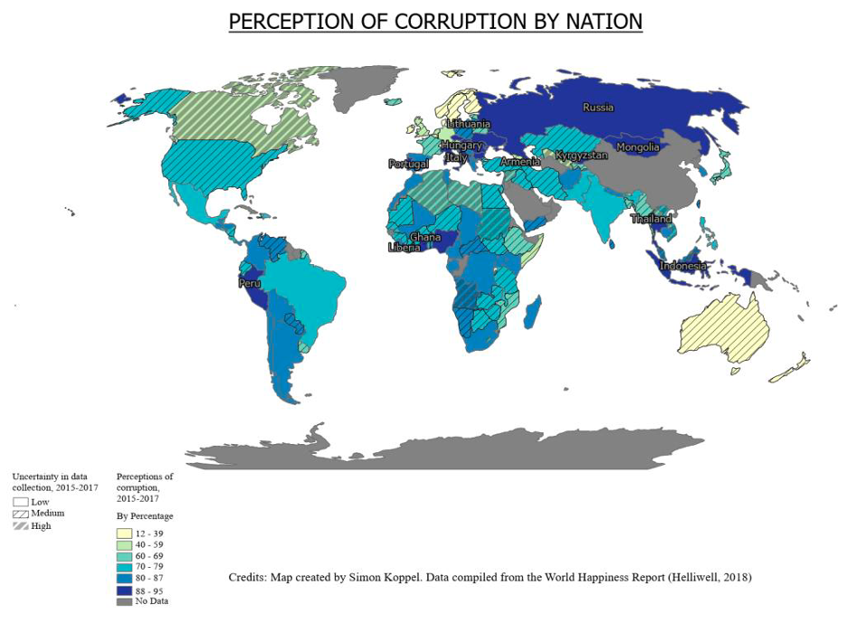
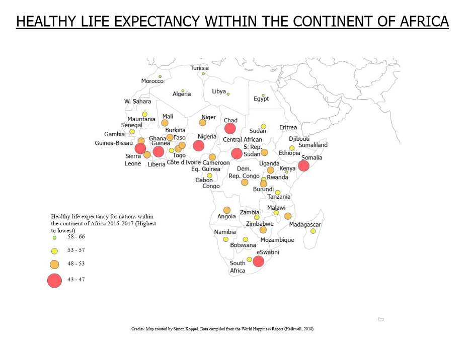
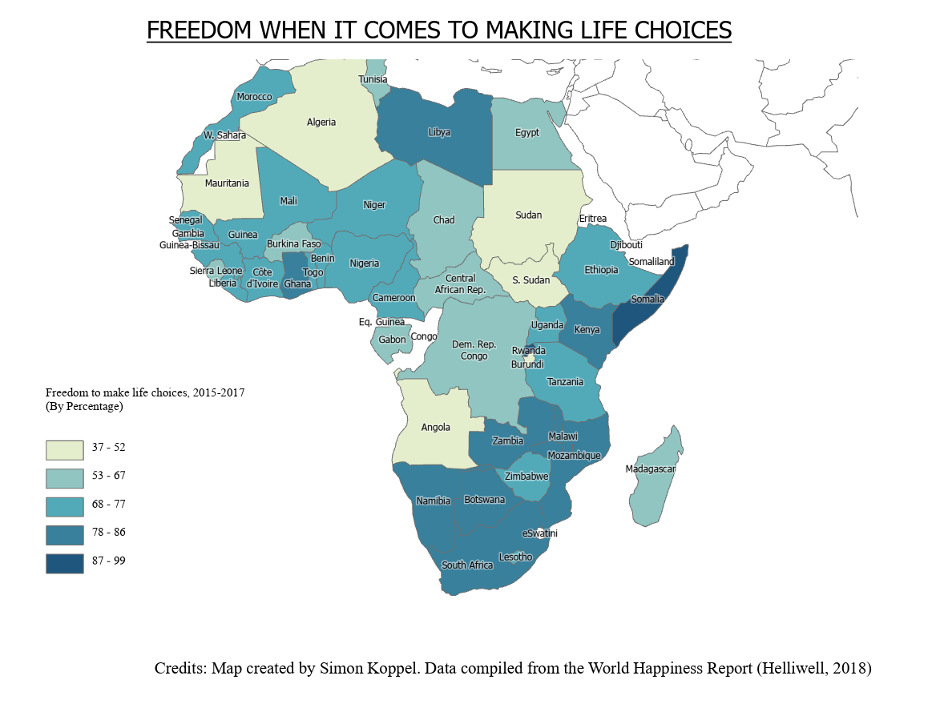
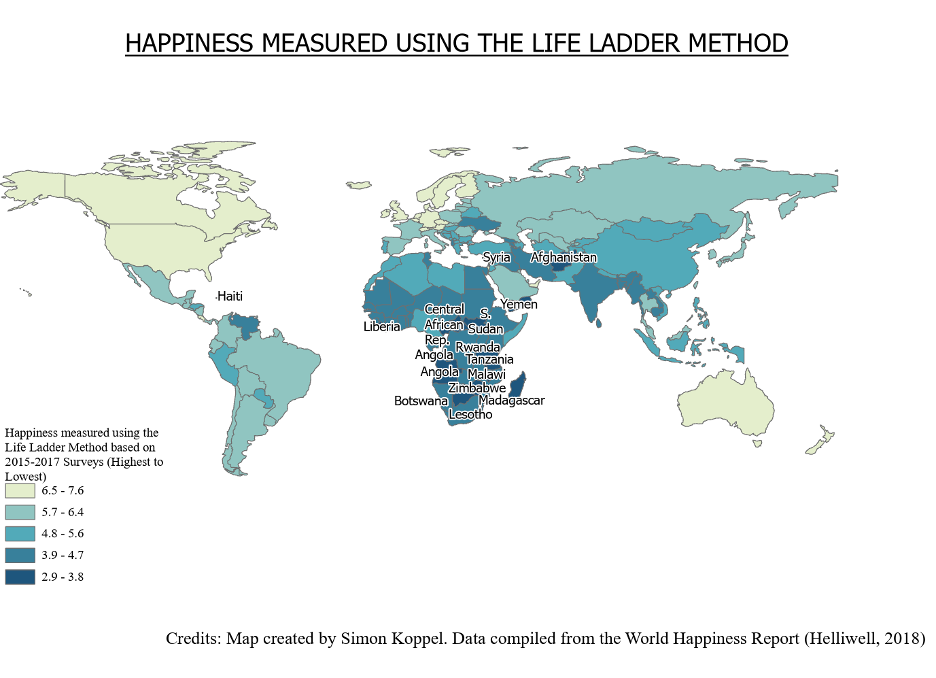

World Happiness & Corruption Analysis
This project analyzes global perceptions of government corruption using data from the World Happiness Report. The analysis explores how perceived corruption relates to life expectancy, freedom of choice, and overall life satisfaction (“Life Ladder”), with a focused regional analysis on Africa.
Perception of Corruption by Nation
Global choropleth map illustrating the percentage of respondents who perceive corruption as widespread within their national governments (2015–2017). Hatched patterns represent uncertainty in data collection.
Healthy Life Expectancy in Africa
Proportional symbol map showing healthy life expectancy across Africa. Larger red symbols indicate lower life expectancy to emphasize urgency and need for resource allocation.
Freedom to Make Life Choices
Choropleth map representing perceived freedom to make life choices across African nations. Results show weaker correlation with life expectancy compared to corruption indicators.
Happiness Measured by the Life Ladder
Global map using the Life Ladder method to measure overall life satisfaction. Lower satisfaction scores are concentrated in Central and Southern Africa, highlighting regional disparities in perceived quality of life.
Key Themes
- Perceived corruption by country
- Data uncertainty and interpretation
- Life expectancy and resource need
- Freedom of life choices
- Overall happiness (Life Ladder)
Methods
The project uses choropleth maps, proportional symbols, and reversed symbology to emphasize urgency and resource allocation needs. Special attention is given to uncertainty in survey-based data.
Key Findings
Nations in Africa show a high concentration of perceived corruption, often correlated with lower life expectancy and lower life satisfaction. However, freedom of choice does not always align with longevity, suggesting more complex social dynamics.